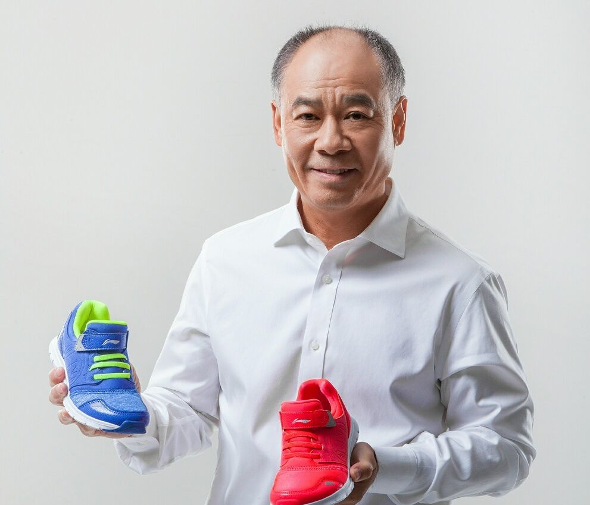

体育行业精英代表
李宁
个人简介
李宁是二十世纪最杰出的运动员之一，在运动生涯中先后摘取十四项世界冠军，创造了世界体操史上的神话，被誉为“体操王子”。1980年入选国家体操队。1987年担任国际奥委会运动员委员会委员。1993年至2000年担任国际体操联合会男子技术委员会委员，现为国际体操联合会荣誉委员。1999年获世界体育记者协会选为“二十世纪世界最佳运动员”。2008年作为第二十九届北京奥运会主火炬手点燃圣火。 2019年1月任中国奥委会委员。
1989年退役后创办以自己名字命名的“李宁”品牌，经过多年发展已成为中国国家级体育用品品牌。 2010年创立了非凡中国控股有限公司，主要从事体育目的地的发展，体育赛事和活动的投资与组织，投资经营体育、健康、休闲生活相关的消费品业务 [6] ，创建了多个服务于城市社区的李宁体育园和大众滑冰运动培训项目全明星滑冰俱乐部，并投资英雄联盟职业电子竞技俱乐部——LNG电竞俱乐部。多年来一直专注于发展体育及相关业务，为中国体育产业及消费品行业的发展作出卓越贡献。
创业经历

1989年，这是李宁人生中除了体育之外的第一次重要抉择。这位体操王子此时26岁，已经退役。对面坐着健力宝的老板李经纬。他建议李宁加入自己的企业。李宁当时有在深圳创办一所体操学校的念头，李经纬建议说：“光靠赞助不行，一定要有经济做后盾，这样才是稳定的、长远的发展思路，你可以搞经济来发展体育。”李宁有点心动了，但他需要突破的障碍还很多。
比较后，李经纬的热情感染了他。1989年5月，李宁加入健力宝，成了总经理特别助理。尽管当时的健力宝只是偏僻一隅小镇上的乡镇企业，但正是这个企业，让刚刚起步的李宁有了起跑的助力。
曾担任健力宝集团总顾问的王志纲有过这样一段回忆：1990年，北京正在筹备亚运会。当时，亚运会火炬接力处对买断火炬接力开出了300万美元的高价，健力宝根本承受不了。这时，李宁本人的公关能力及名人效应再次发挥作用，他用一种爱国情绪感染了火炬接力处的领导：如果承办权落到外国公司手里，那将是12亿中国人的耻辱。经过一番谈判，比较终，亚运会火炬接力传递活动由健力宝主办，费用只要250万元人民币。
于是，就有了那么一个历史性的时刻：1990年8月，在世界屋脊青藏高原，李宁作为运动员代表，身穿雪白的“李宁”运动服，从藏族姑娘达娃央宗手里接过了亚运圣火火种。至今，很多人都能回忆起那雪白与神圣的一幕。25亿中外观众由此知道了健力宝和“李宁”。火炬传递到天安门，通过中央电视台，全国人民都发现党和国家领导人身上穿的都是“李宁”。这一刻，李宁牌真正横空出世。这个夏天，成了李宁商业故事的真正开始。
努力过、收获过，然而在品牌建设上，李宁公司发现自己的问题仍然存在。一方面是国内外竞争对手强势增长，耐克和阿迪达斯长驱直入，另一方面，“李宁”近年来的增长速度却在趋缓，产品也无大的改观。
2002年年底，应邀前来的全球比较大的管理咨询组织，IBM咨询服务团队进入李宁公司。在IBM的帮助下，“李宁”找到了问题所在：战略方向的缺失，使得公司的内部结构上出现问题，这又导致了市场运营上的问题。总之，公司的一切问题都可归结到无清晰的战略这一核心问题上。比如提到耐克，会让人想到篮球，阿迪达斯会让人想起足球，“李宁”需要寻找自己的项目，这将是什么？ 从体操到跑步，再到足球，“李宁”开始摸索符合自己的项目。而比较终“李宁”选择了篮球。 2006年1月10日，李宁公司签约了第一位NBA球星：年轻的达蒙·琼斯。对于李宁公司而言，这笔交易表明它已经开始在本土市场上向国际巨头发起反 击。签约不久，一款专门制作的篮球鞋“飞甲”空运到了琼斯手中。这位热情的年轻人也投桃报李，他经常将“飞甲”作为礼品赠送给队友。“李宁风”吹到了NBA的更衣室里。
有了这奏效的第一步，深受鼓舞的“李宁”接下来开始了和奥尼尔的谈判，并比较终将奥尼尔招至旗下。而火箭队的查克·海耶斯是那“第三个”。至此，“李宁”旗下已拥有三位NBA球星。 就在“李宁”春风得意时，2006年9月，“李宁”又获得了一个意外的胜利：男篮世锦赛上，身披“李宁”战袍的西班牙男篮战胜希腊队，成了世界冠军。顺理成章地，赞助商“李宁”也成为比较大的商业赢家，也成为首家赞助篮球世界冠军的中国企业。在国际商业上出现了让人欣喜的中国风。